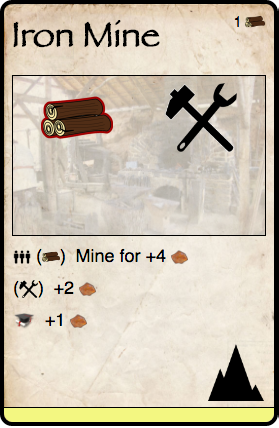
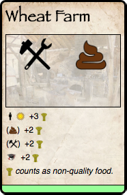

The Cards - In Detail
Title
- The name of the card. Cards are sometimes referred to by other cards.
Building cost
- In the top-right of the card, though sometimes empty if the location is free. Describes how many of each resource is required to complete them. Also includes whether or not the location requires education to build (which is NOT on the card's back).
Demand
- Demand describes when a village is willing to trade for a good from another player, and is unwilling to give up a good to other players.
- When demand is fulfilled, it gets a game piece placed on it. It is unfulfilled when empty.
- Any large image of a game piece is considered to be demanded - unless it is covered by that good.
- See the Trade phase for a full explanation of demand.
Adjacency requirements
- Some locations need to be built beside (not on!) a specific terrain type such as Mountains or Rivers (eg. Fishing Nets must be beside a river). This requirement can be found in the bottom right of the card. Eg.
Effects
Actions
Performing actions is where players will spend most of their time. An action is taken by a population/worker. An action that can be taken only once per round is indicated by a single worker icon, whereas an action that can be taken multiple times is indicated by three workers.
Conditions
- An action or effect may only apply during a specific season, or require an educated worker to complete. This requirements will be listed on the left of the action.
Costs
- Some effects or modifiers require the consumption of a particular good in order to function. They are inoperable without that good because it must be paid as a cost. These are always found in parenthesis. With the Iron Mine, 1 Wood must be expended to gain 4 metal. [image needs updating]

Passive Effects
- Passive effects are those that happen automatically under certain conditions. These are performed during the Passive Phase.
Active Effects
- An active effect requires an action from a worker to take effect.
Modifiers
- A modifier is not an action unto itself, but it adds to the effects of an action.
- Each modifier is indicated by a small arrow. An action can have multiple modifiers.
- For example, a Wheat Farm generates 3 Wheat as an action. However, if tools are consumed as part of that action, an extra 2 Wheat are produced, leading to a total production of 5 Wheat.

General Effects
- Anything in italics is a general effect for that card. Eg. +3 Prosperity when built or Must own Winery.
The Golden Rule of Card Games
If a rule on a card contradicts a rule in the rulebook, the card takes precedence.